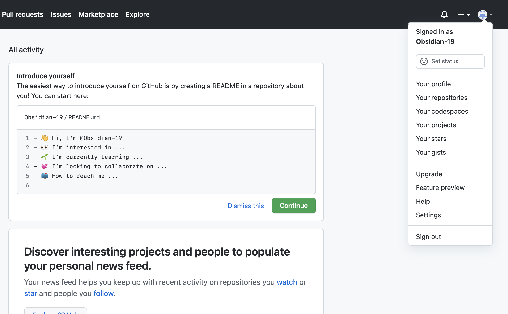
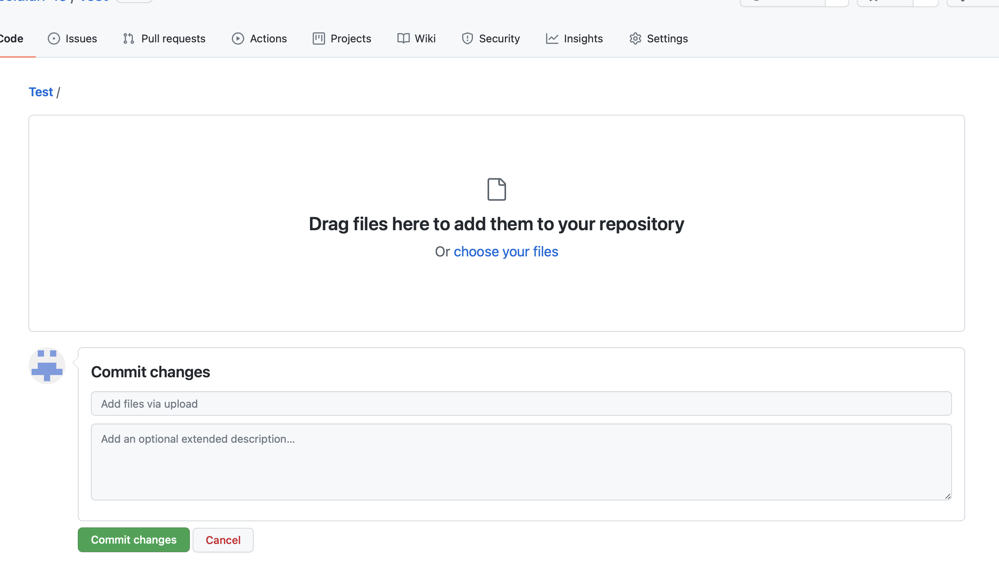

If you do not have an account, sign-up with GitHub.
Once account is created, click on profile icon at top right of page and select "Your repositories".
This will take you to the following page.

Click on the green "New" button to create a repository that you will use as a file storage location for the website.
You will see the next page following hitting "New". Create a name for your repository using the following naming convention, "yourname".github.io.

The next step will be to create files to upload to your GitHub repository. To start you will need to download a code editor (VS Code, Atom, Sublime Text) to create an HTML file to structure the content of the website. Additionally, you will need any images to also be saved in the directory location where your HTML file is located, so any embedded images can be resourced.

Once your HTML file and supporting resources have been saved in a directory location, the next step will be to commit your files to your GitHub repository. In the repository you created previously, there will be a hyperlink in the middle of the page called "uploading an existing file"

Once you have selected the "uploading an existing file" link it will take you to the following.
This will be where you upload your files for your website and "Commit" the changes to.
Once you have commited your files to GitHub, you can go to the browser of choice an review your webpage by entering "https://"yourname".github.io" in the address.